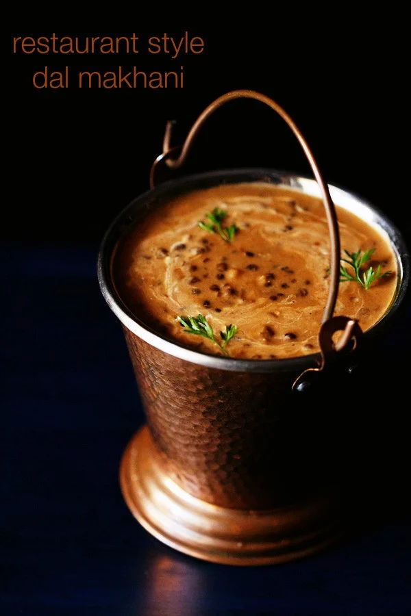

Dal Makhani

Description
This Dal Makhani recipe is a restaurant style version with subtle smoky flavors and creaminess of the lentils. If you love authentic Punjabi food then you are going to love this Dal Makhani even more.
Dal Makhani is one of the most popular lentil recipes from the North Indian Punjabi cuisine made with Whole Black Lentils (known as Urad dal or Kaali Dal in Hindi) and Kidney Beans (known as Rajma in Hindi).
Ingredients
- ¾ cup whole black urad dal / sabut urad dal
- ¼ cup kidney beans / rajma
- 1-2 tbsp ghee / clarified butter
- Oinons and Tomatoes
- Spices
- Turmeric Powder
- Red Chilli Powder
- Coriander Powder
- Garam Masala Powder
Steps
Preparing Dal and Rajma
- Take 1 cup of black urad dal and ¼ cup of rajma in a large bowl.
- Add enough water and soak overnight or atleast for 8 hours.
- Rinse the dal in a running water and transfer into a cooker. add 3 cups of water.
- Also add some salt to taste.
- Close the lid and pressure cook on medium flame for 5 whistles. or till the dals are cooked completely.
Making Dal Makhani
- In a large kadai add a tbsp of ghee and saute bay leaf for a minute. or till they turn fragrant.
- Then add finely chopped onions and saute till they change in colour.
- Once onions are done, add ginger-garlic paste. saute till raw smell disappears completely.
- Now add chopped tomatoes and cook till they are soft.
- Add turmeric, coriander powder, cumin powder, chilli powder and salt to taste. cook the masalas for a minute.
- Once the masalas start releasing oil from sides, add cooked dal and give a good stir.
- Adjust the consistency by adding 1 cup of water or as required.
- Boil for 15 minutes or more till the dal absorbs flavour and turns thick.
- To get the creamy texture, add 2 tbsp of fresh cream. you can also skip or increase the amount of cream according to your preference.
- Top up with fresh coriander leaves.